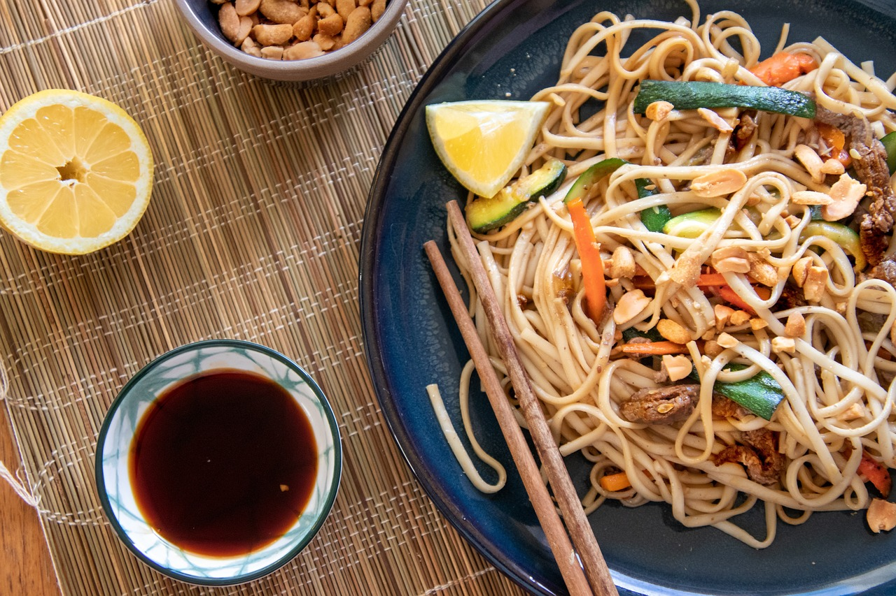

Gebratene Nudeln Chinesisch
Zubereitung
Die Nudeln mit warmem Wasser übergießen, ca. 15 Min. ziehen lassen (bzw. nach Packungsangabe kochen), bis sie gar, aber nicht zu weich sind, und dann abtropfen lassen. Das Hähnchenfleisch in kleine Stücke schneiden, in gesalzenem Wasser kochen und abtropfen lassen. Etwas Öl in einen heißen Wok oder eine Pfanne geben, darin das verquirlte Ei kurz braten und verrühren, dann die Zwiebel hinzufügen und ganz kurz weiter braten. Die Karottenstreifen und den Lauch mit hineingeben und kurz braten. Dann die Nudeln mit braten, mit Salz, Zucker und der dunklen Sojasauce würzen, gut mischen und weiter braten. Das Fleisch und die Sojasprossen hinzufügen und in der Hitze kurz untermischen. Etwas weißen Pfeffer und ein bisschen Sesamöl (ca. 1/2 - 1 TL) hineinmischen und die Nudeln servieren.
Rezept erstellt von
Artur Kloster